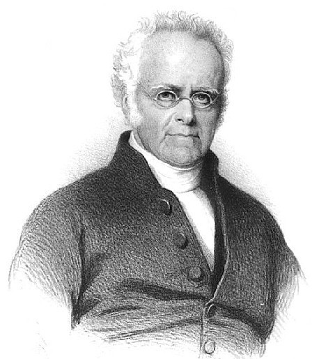

Personal Evaluation:Williams was a key figure to the spread of Christian throughout New Zealand, but he also was the cause of many problems and issues due to his translation of the Treaty of Waitangi that are still significant in the modern day because of the poor translation. He also held controversies regarding his land holdings, which had inevitably gotten him dismissed from the CMS.
Despite this controversy, I do believe he did preach the Gospel with good intentions, as shown in his actions in trying to convert Māori to christianity directly, and resolving Māori conflicts through peace, which made them stray from the cycle of revenge. Not to mention the fact that he also tried to settle down the Musket Wars by banning missionaries from trading Māori muskets. All of these, in my opinion, showed that he had the wellbeing of Māori in mind. And, if it weren't for him, Christianity wouldn't have been able to spread through New Zealand as quickly as it has, making it super significant.